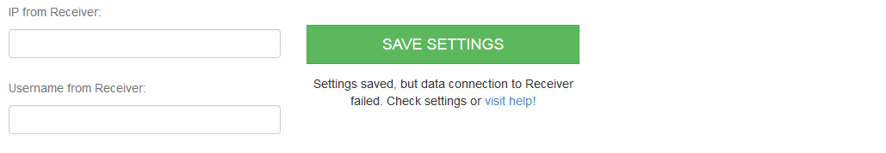
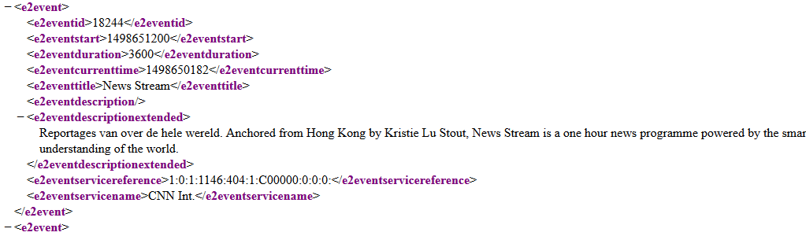

When this message is displayed mostly your XML file from Receiver has an other structure, or the adress to the file is different.
That could happend when the Receiver has not Enigma2 running, or the Webinterface from Receiver is written different.
But with some changes in the php files, you could make Uniwebif compatible.
If you have no Editor to open the php files with line numbering, download the free Open Source Application Notepad++
Step 1: Watch this video to learn how you get the address from the EPG XML file to see it in Browser, and to get the url from the requests to Receiver.
Open the XML file in Browser. You can see how the structure from the XML file is build.
As example an entry from a broadcast:
A single entry in XML file was opend with <e2event> and closed with </e2event>
The XML tag for the broadcast title is <e2eventtitle>
The php file read the tag with $xml->e2event[$i]->e2eventtitle

If your XML file look like this <eventtitle> without e2 you have to change the line in php to this:
$xml->event[$i]->eventtitle
$xml->event[$i]->eventdescription and so on..
Change the lines in these php files in folder /functions.
bouquet_crawler.php | Line 22, 24, 28, 32, 37, 38
channel_crawler_complete.php | Line 18, 20, 24, 28, 33-45
channel_id_crawler.php | Line 34, 36, 40 ,43, 48, 49, 50
power_control.php | Line 30
save_rec_locations.php | Line 35
save_box_settings.php | Line 32
bouquet_crawler.php | Line 10
channel_crawler_complete.php | Line 8
channel_crawler_zapp_request.php | Line 24
channel_id_crawler.php | Line 23
channelzapper.php | Line 66, 78, 90
crawler_cron.php | Line 6, 14, 21, 50, 58, 68, 74, 82, 89
power_control.php | Line 16, 19
save_timer_in_db.php | Line 81
send_zapp_request.php | Line 24
send_timer_instant.php | Line 45
save_rec_locations.php | Line 16
save_box_settings.php | Line 26
statusbar1.php |
timer_list_inc.php | Line 32
For more help visit github.com/gempro/uniwebif/issues